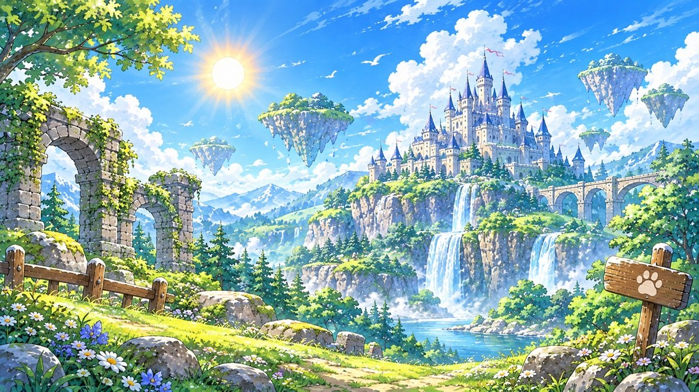

RABBIT ARCHER — 横スクロールアクション
ラビットアーチャー
砕かれたにんじんクリスタルのかけらを集めるため、弓の得意なこうさぎ「K」が世界へ旅に出る。
クリア 0 ／ 星 0 ／ 通算 0 回クリア
全ステージ制覇！ おつかれさま——タイムとコインの記録更新に挑もう。
ブラウザで開くと上下にバーが出ます。全画面で遊ぶには、共有ボタンから「ホーム画面に追加」して、ホーム画面のアイコンから開いてね。追加済みでもバーが出るときは、アイコンを消してもう一度追加し直してみてください。※iPhoneではブラウザとホーム画面アプリで記録の保存場所が別になることがあります。追加する前に「データ」の「引き継ぎコード」でコードを作っておくと、ホーム画面版へそのまま移せます。
このページは友達に配るための配布版です。記録（クリア状況・ベストスコア）はこの端末のブラウザに、セーブデータ1・2・3として保存されます。iPhoneでは開き方（Safari／ホーム画面）ごとに保存場所が分かれることがあるため、ホーム画面へ移すときや機種変更のときは「データ」画面の「引き継ぎコード」でコードを作って移してください。
データ
あそぶデータの切替と、引き継ぎコードの画面です
あそぶデータの切替
あそぶデータを えらんでね（3つまで それぞれ独立）
データごとに、クリアしたステージ・星・かけらの進み具合が別々に残ります。スロットを切り替えても、ほかのデータの記録は消えません。
引き継ぎコード
iPhoneでは、Safariで開いたときと、ホーム画面のアイコンから開いたときで、記録の保存場所が別になることがあります。そのためホーム画面に追加しただけでは記録は自動で移りません。下の「引き継ぎコード」を使うと、セーブデータ1・2・3をまとめて移せます。機種変更のときも同じ手順です。
- 記録が残っている方（例：Safari）で、この画面の「コードを作る」を押してコピーする（LINEやメモに送っておいてもOK）
- 移したい方（例：ホーム画面のアイコン）でこの画面を開き、コードを貼り付ける
- 「このコードで引き継ぐ」を押して確認すると、そのまま続きから遊べる
※コードを作る前に、移したい方のアイコンやブラウザのデータを消さないでください。元の記録は元の開き方で開けば残っています。
1. コードを作る（記録がある方で）
コードは長めです。全部をコピーしてください。自分宛てのLINEやメモに貼って送ると、ホーム画面版で貼り付けやすくなります。
2. コードで引き継ぐ（移したい方で）
作ったコードを下に貼り付けてください。ファイルに保存した場合は「ファイルから読み込む」でもOKです。
読み込んだ記録で、今この開き方に残っている記録を上書きします。よろしいですか？